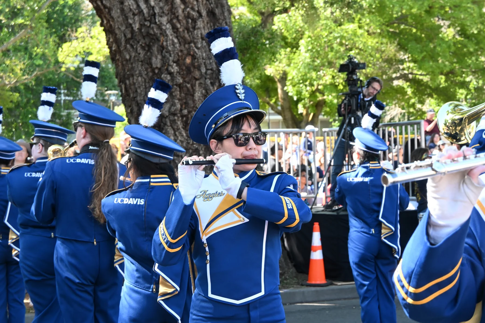
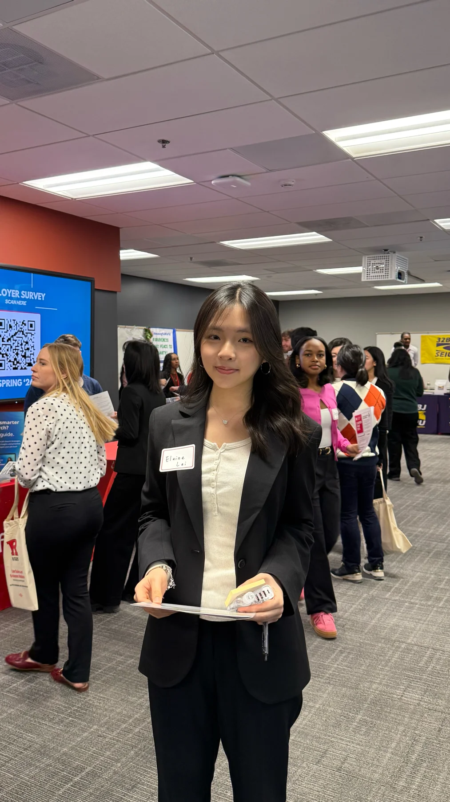
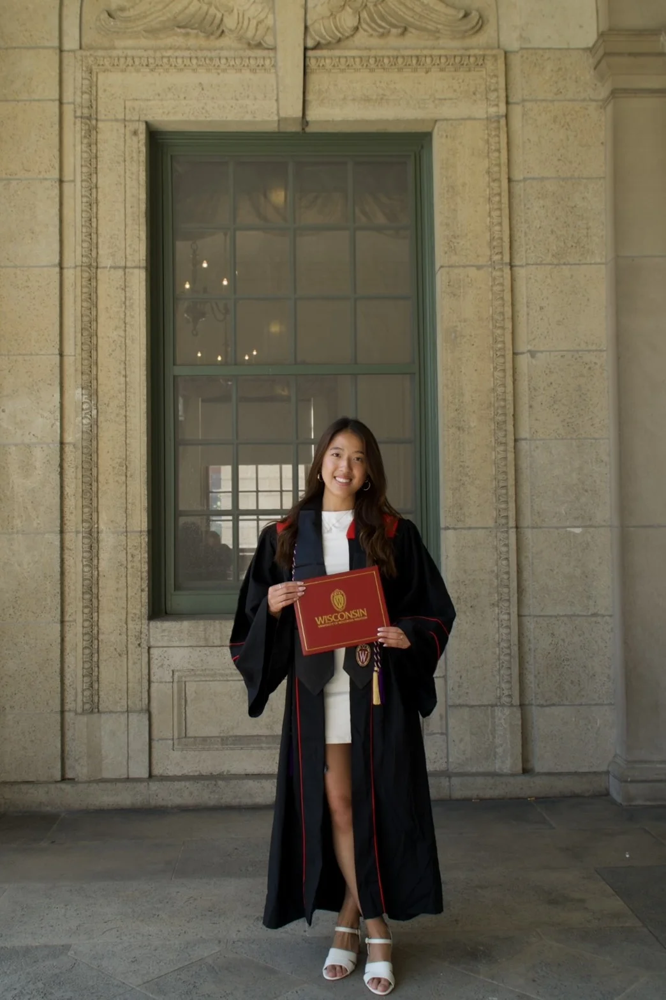
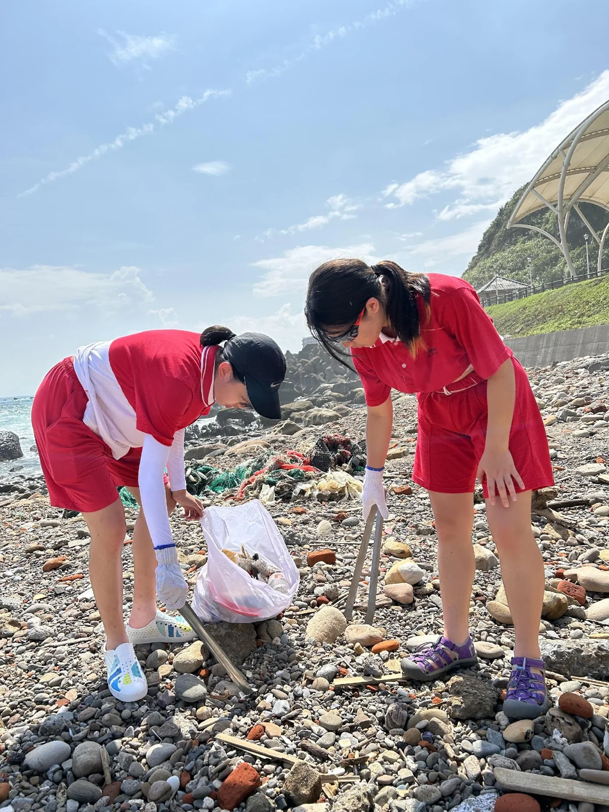
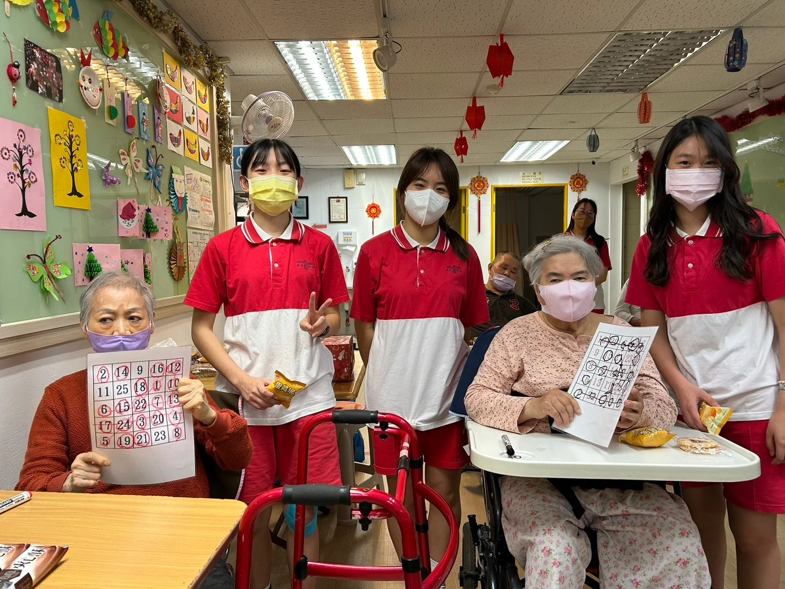
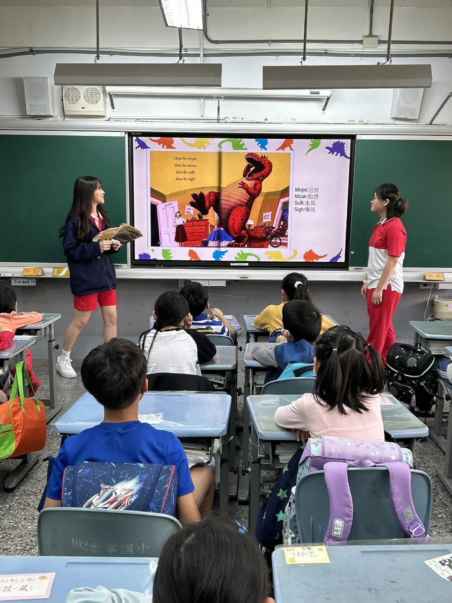
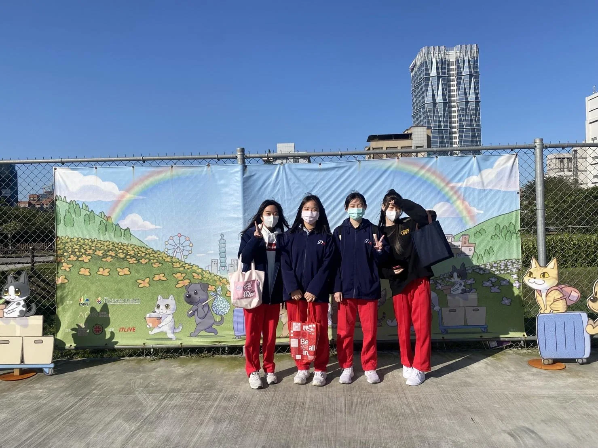

DA REN / INTERNATIONAL PROGRAM115 學年度 國際升學



VOICES BEYOND CAMPUS / 學姊經驗摘述到了美國後，
可以無縫接軌地
適應教授給的功課。
UC Davis大一學姊・寫作與學習適應
雙軌制打下的
學科基礎，
很有用。
Rutgers Business School學姊・學科基礎
更加獨立、自信，
用更開放的心態
去看待世界。
Wisconsin–Madison商學院畢業學姊・文化與成長
01 / 03
閱讀學姊的故事 ↗ 學生的真實經驗，是理解這段旅程的起點。學科 × 語言 × 世界
01 / THE APPROACH海外升學的三個重點
學科、英語與服務
校內成績、英語能力與服務經驗，
一起構成海外升學的準備。
在達人，從每一天的學習開始。
01學科基礎
ACADEMIC FOUNDATION / GPA
在校成績是國外大學入學的重要參考。雙軌制以中文學習校內必修與選修，再以英語課程拓展學習。
看雙軌課程 ↗02英語與檢定
LANGUAGE & TEST PREPARATION
準備國際標準英語測驗與 SAT。小班教學增加與外師的口語互動，寒暑假透過模考加強口說與寫作。
看英檢準備 ↗03服務經驗
SERVICE & CONNECTION
走進社區，也走出課堂。透過淨灘、陪伴孩子、長者與動物照護，理解服務與社會貢獻的價值。
走進服務現場 ↗
02 / TWO TRACKS, ONE FOUNDATION雙軌課程
紮實的學科。持續使用的英語。
中文學科，
外師課程。
中文學科鞏固理解，英語課程練習表達。從 G10 到 G12，循序累積學術、語言與申請所需的準備。
以下為國際學程課程規劃；實際開課與修課安排，請以學校最新公告為準。
G10 高一展開課程收合課程
中師校內必修
國文、數學、地理、公民、物理、地科、化學、生物、體育、生活科技、美術、音樂
外師語言課程
English Composition
外師學科課程
American History
Language Art I
Life Education
Musicology
Music Production
STEM
Club
G11 高二展開課程收合課程
中師校內必修
國文、數學、地理、公民、體育、家政、探究與實作、音樂、(本土語言)
外師語言課程
English Composition
外師學科課程
American History
Anthropology
Theory of Knowledge
Language Art II
Film Studies
Life Education
Arts
Club
G12 高三展開課程收合課程
中師校內必修
國文、數學、體育、全民國防、健康護理、音樂
外師 AP 課程
AP US Government Politics
AP English & Composition
AP Macroeconomics
AP Arts History
外師學科課程
Film Studies
Theory of Knowledge
European History
Club
A SUMMER / WINTER OF PRACTICE寒暑假英檢準備
寒暑假加強雅思英檢與 SAT，安排模考，
並由外師加強口說與寫作。
依原講座規劃，雅思未達 6.5 分者須參加寒暑輔。最新安排請向學校確認。
打開寒暑輔課表＋
G10–G11 課表示例
G10–G11 寒暑輔課表示例| 時間 | 週一至週四 | 週五 |
|---|
| 8:00–8:50 | IELTS Mock Test／2F | 志工服務 |
|---|
| 9:00–9:50 | IELTS／5F | 志工服務 |
|---|
| 10:00–10:50 | IELTS／5F | 志工服務 |
|---|
| 11:00–11:50 | Your World Competition | 志工服務 |
|---|
| 1:00–1:50 | SAT English／5F | 志工服務 |
|---|
| 2:00–2:50 | SAT English／5F | 志工服務 |
|---|
| 3:10–4:00 | SAT Mock Test／2F | 志工服務 |
|---|
下午時間沿用課表的 1:00、2:00、3:10 記法。
此為講座提供的課表示例，實際安排以學校公告為準。
03 / LEARNING THROUGH SERVICE志工活動
走出教室，
看見身邊的需要。
在服務裡練習關心，
在互動裡理解不同的需要。
學習，也發生在教室之外。

01淨灘 BEACH CLEANING
02陪伴長者 SENIOR CENTER
03陪孩子閱讀 READING TOGETHER
04動物收容所服務 ANIMAL SHELTER04 / YOUR THREE-YEAR JOURNEYG10—G12 升學規劃
三年升學規劃
依講座規劃，每週一次 10 分鐘顧問諮詢，
掌握升學進度，
把三年的方向，一步步走清楚。
G10
認識自己，設定方向。
高一 G10 / SELF-ASSESSMENT & GOAL SETTING- 擬定申請計畫
- 提供選課建議
- 安排暑期活動
- 分析留學策略
- 追蹤在校成績
- 準備 IELTS 考試
G11
把目標，化為準備。
高二 G11 / ACHIEVE ACADEMIC GOALS- 排定申請時程
- 建議大學名單
- 瞭解入學要求
- 撰寫留學文件
- 準備 SAT 考試
G12
完成申請，預備啟程。
高三 G12 / CULTURAL ADAPTATION- 確認申請學校
- 繳交申請資料
- 指導英文面試
- 追蹤申請結果
- 建議就讀學校
- 預備留學生活
05 / LETTERS FROM ABROAD學姊的留學故事
抵達之後，
她們這樣說。
課堂上的練習，如何走進大學生活？
聽學姊談課業、適應與成長。
大一・學習節奏十週一學季，
找到自己的節奏。
學姊分享，UC Davis 的 Quarter 學季制，每學季只有 10 週。在她的經驗裡，在達人累積的寫作練習與同時兼顧多項課業的能力，幫助她適應大學的作業與專題。
「並在短時間內寫出
有水準的功課。」
55學分學姊分享大一取得的學分數。屬個人修課經驗，學分制度與實際修課安排依大學規定而異。
02 / RUTGERS BUSINESS SCHOOL學姊・學科基礎帶著熟悉的基礎，
迎接全新的課堂。
學姊認為雙軌制打下的學科基礎，尤其是數學，對大學學習很有幫助。她也分享 AP 課程與選課的經驗。
雙軌制打下的學科基礎，
成為大學學習的助力。
學姊分享：第一學期獲得院長嘉許
此為學姊的個人分享；AP 採認與選課規則依各大學規定。
03 / WISCONSIN–MADISON商學院畢業・文化與成長在多元文化中學習與成長
從 AP 與語言課程，到日常以英文溝通和聽課，學姊覺得這些經驗幫助她適應美國教授的教學方式。不同文化與想法，也讓她看見世界的多元。
「這段經歷讓我
變得更加獨立、自信。」
她帶走的，不只是課堂知識，還有用更開放的心態看待世界的能力。
06 / MANY PATHS FORWARD升學成果
從商業到藝術，
看見不同升學選擇。
商業、藝術、生物與心理。
從學生的錄取成果，
看見不同領域的可能。
歷年成果非未來錄取保證；排名來源與統計母體未載明。
商業管理
展開錄取紀錄收合錄取紀錄
孔O齡 同學 · 錄取紀錄
- 多倫多大學 · Mississauga 校區管理學系
- 多倫多大學 · Scarborough 校區藝術傳播管理系
- 英屬哥倫比亞大學 · Okanagan 校區文學院大一不分系
郭O菡 同學 · 錄取紀錄
- 威斯康辛大學麥迪遜分校商學系
- 美國賓州州立大學商業管理系
藝術領域
展開錄取紀錄收合錄取紀錄
郭O岑 同學 · 錄取紀錄
- 芝加哥藝術學院School of the Art Institute of Chicago獎學金 US$37,800
- 加州藝術學院California College of the Arts獎學金 US$72,000
- 紐約視覺藝術學院動畫系 BFA Animation Program
生物醫學／心理
展開錄取紀錄收合錄取紀錄
樓O佳 同學 · 錄取紀錄
- 多倫多大學 · St. George 校區心理學系
- 麥基爾大學心理學系
楊O棣 同學 · 錄取紀錄
- 美國賓州州立大學獸醫與生物醫學科學系
- 紐約州立大學水牛城分校生物系
上述為講座所列學生錄取與獎學金紀錄；獎學金金額未載明適用期間與續領條件，不代表所有學生的錄取或獲獎結果。
DA REN / A FOUNDATION FOR WHAT COMES NEXT達人國際班
111、112 年｜講座記載的升學成果100%
錄取世界前 30 大
此為 111、112 年紀錄，非未來錄取保證。
統計母體與排名來源未載明。
下一段旅程，
從扎實的今天開始。
中文學科的基礎、充分的英語互動，
以及依講座規劃，每週持續的升學諮詢。
讓準備，成為日常。
前往達人高中官網 ↗最新課程、招生方式與報名資訊，
請以學校官方公告為準。